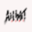
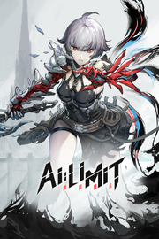

 AI LIMIT
Detalles
|  | |
| Tiempo de juego | No Jugado |
| Última actividad | Nunca |
| Añadido | 4/1/2025 15:35:47 |
| Modificado | 4/2/2025 17:01:30 |
| Estado de finalización | Not Played |
| Librería | Playnite |
| Fuente | 4TB TANK |
| Plataforma | PC (Windows) |
| Fecha de lanzamiento | 3/27/2025 |
| Puntuación de la Comunidad | 86 |
| Puntuación de la Crítica | 75 |
| Puntuación de usuario | |
| Género | Acción Aventura Indie Rol |
| Desarrollador | Sense Games |
| Editor | CE-Asia |
| Característica | Cloud Saves Compat. Total Con Mando Logros De Préstamo Familiar Un Jugador |
| Enlaces | Punto de encuentro Discusiones Guías Noticias Página de la tienda PCGamingWiki Logros |
| Tag | 3D Acción Acción y aventura Adorables Anime Aventura Combate Desnudos Distopías Drama Exploración de mazmorras Fantasía Hack and slash Indie Posapocalípticos Protagonista femenina Rol Rol de acción Tipo «Dark Souls» Un jugador |
Descripción
Explorata un mundo post-apocalíptico desconocido
Después de que el ecosistema artificial se había colapsado repentinamente por razones desconocidas, los desastres naturales y las guerras siguieron, la civilización fue destruida en un instante… Y durante cientos de años, una anormal sustancia llamada “El Fluido” se extendió por todas partes, y varios tipos de monstruos emergieron en la tierra.
Se adentrará en la última ciudad humana, Haven’s Well, y explorará los sombríos y húmedos túneles subterráneos, los intrincados barrios y la ciudad flotante sobre el lago… Buscará las verdaderas razones de la destrucción de la civilización en las ruinas infestadas de monstruos. Atravesará diversos fenómenos anormales enfrentando a enemigos misteriosos y peligrosos, poniendo punto final a una historia extraña y desesperada.

Emprende un viaje con una misteriosa misión con gran compromiso.
Los “Bio-Androides” tienen apariencia humana, pero son una nueva forma de vida creada a través de una tecnología misteriosa. Con sus propias misiones, ellas comienzan sus viajes solitarios y peligrosos, y con la ayuda de “Ramas de cristal ”, pueden renacer una y otra vez.
Pero ahora, Ramas de cristal ya han sido destruidas y una de los Bio-Androides, usted debe buscar y reparar las Ramas de cristal en diferentes partes de la ciudad. Se encontrará con humanos y compañeros Bio-Androides que también están en situaciones desesperadas y experimentará sus alegrías, tristezas y las creencias que mantienen incluso en la desesperación, descubriendo así la verdad oculta detrás de los desastres y los fenómenos anormales.

Enfrenta a enemigos misteriosos y poderosos.
Guerreros que se han perdido a sí mismos y se han convertido en bestias salvajes locas;
Soldados que caminan por el cielo cubiertos de agudos filos en todo su cuerpo;
Enormes monstruos que masacran y destrozan la ciudad con embestidas y explosiones…
En las innumerables muertes y renacimientos, deberá desafiar a enemigos poderosos y monstruos anormales de múltiples facciones, encontrar los debilidades bajo sus violentos ataques y luchar con todas las fuerzas para lograr la victoria y continuar el viaje en el apocalipsis.

Experimenta un combate de acción emocionante y variada.
◆ Con amplia variedad de armas y másabundancia de tipos!
◆ Las habilidades de combate con armas pueden sustituirse libremente y combinarse con flexibilidad!
◆ El sistema de “Sincronización” que mejora con el comportamiento en batalla, le permiten más acciones en la batalla para que sea cada vez más poderoso en ataque y defensa!
◆ El dispositivo de teconología en tu mano izquierda puede aplicar hasta docenas de “Spell” para realizar habilidades de ataque, defensa y apoyo!
◆ Con varios sistemas exclusivos para conseguir una rica combinación de movimientos y aprovecha la primera oportunidad de ataques y defensas en cada batalla!

Explora ruinas de la ciudad y obtiene poderosas armas, armaduras y artefactos de antigua civilización.
Avance paso a paso en las ruinas misteriosas y magníficas de la ciudad, y busque armas y armaduras con diferentes estilos y capacidades: algunas ya están dominadas por poderosos monstruos y otras se encuentran en lo más profundo pasaje complejo. Aparte de sus atributos de combate, estas armas y armaduras también proporcionan cambios únicos en sus apariencias, ¡así que luche con una postura única!
Además, durante su exploración, también encontrará artefactos de antigua civilización dispersos por todas partes. Utiliza las habilidades de los Bio-Androides para leer los recuerdos conservados en ellos y obtener una visión de la historia de la ciudad de Haven’s Well.